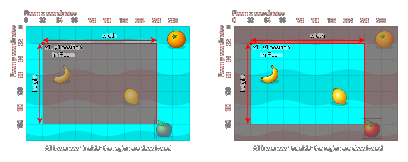

instance_deactivate_region(left, top, width, height, inside, notme);
| Argumento | Descripción |
|---|---|
| left | La coordenada x de la izquierda de la región rectangular para desactivar. |
| top | La coordenada y de la parte superior de la región rectangular para desactivar. |
| width | El ancho de la región para desactivar. |
| height | La altura de la región para desactivar. |
| inside | Ya sea para desactivar instancias en el interior de la región (verdadero) o el exterior (falso). |
| notme | Si se excluye la instancia de llamada de la desactivación (verdadera) o no (falsa). |
Devoluciones: N / A
Con esta función, puede definir una región dentro de la habitación para desactivar las instancias que se han activado previamente. Esta región puede marcarse como "dentro" o "afuera" como se muestra en la siguiente imagen: 
Puede ver en la imagen anterior que la instancia "apple" siempre está inactiva porque, incluso si el sprite en sí no se superpone a la región, el cuadro delimitador sí lo hace. Por lo tanto, se considera que las instancias están dentro de la región especificada cuando su cuadro delimitador se superpone con él, y el estado de la máscara de colisión (precisa o no) no se toma en consideración.
NOTA: Si desactiva una instancia en el inicio de sala (es decir, desde el código de creación de sala o desde una instancia crea evento de una instancia dentro de la sala) todas las instancias que se colocan dentro de la sala desde el editor de sala seguirán ejecutando su evento de creación antes de ser desactivado
ADVERTENCIA: la desactivación de instancias que tienen habilitada la física NO evitará que sus dispositivos interactúen dentro de la simulación física. Para eso debes establecer su phy_active variable a true o false a medida que activa / desactiva las instancias.
instance_activate_all();
var _vx = camera_get_view_x(view_camera[0]);
var _vy = camera_get_view_y(view_camera[0]);
var _vw = camera_get_view_width(view_camera[0]);
var _vh = camera_get_view_height(view_camera[0]);
instance_deactivate_region(_vx - 64, _vy - 64, _vw + 128, _vh +
128, false, false);
El código anterior activa todas las instancias y luego desactiva una región dentro de la sala.